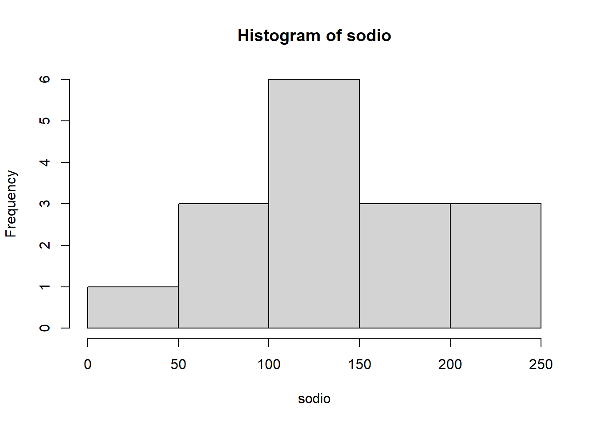
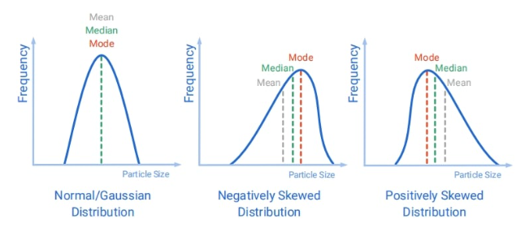
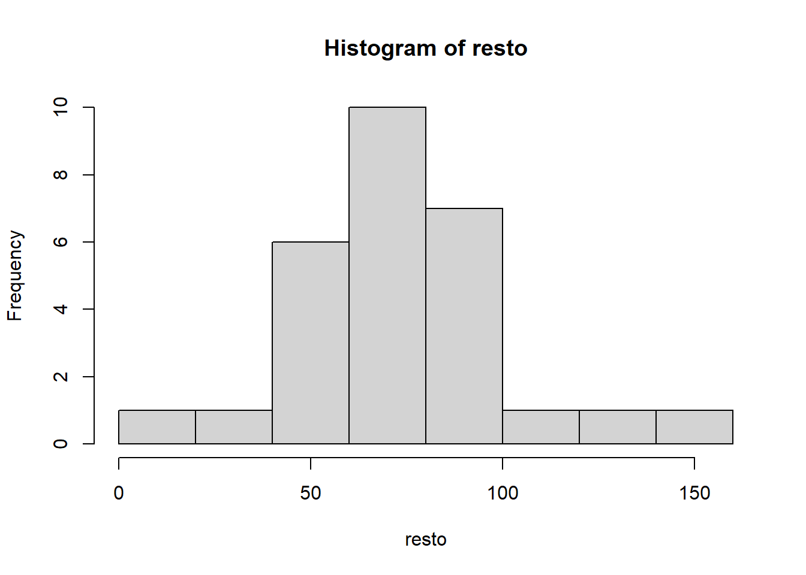
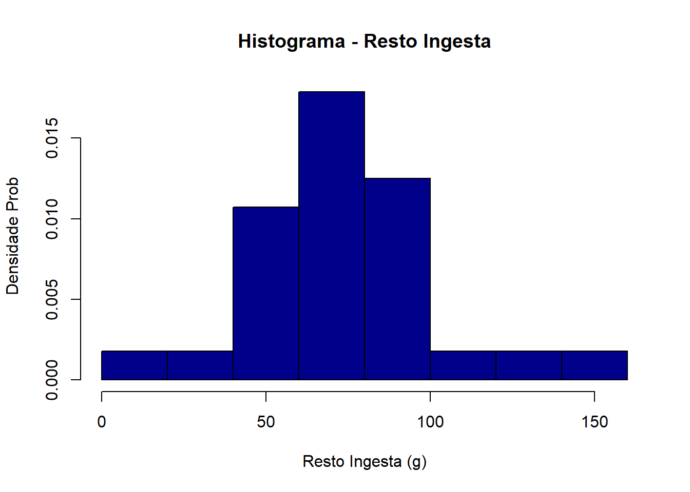
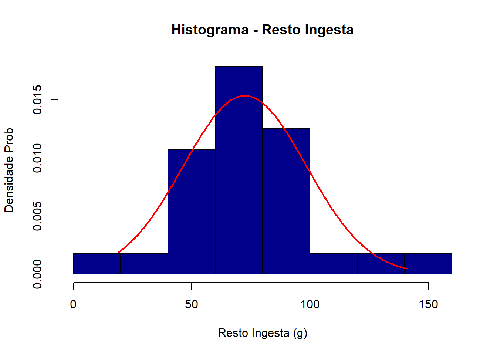
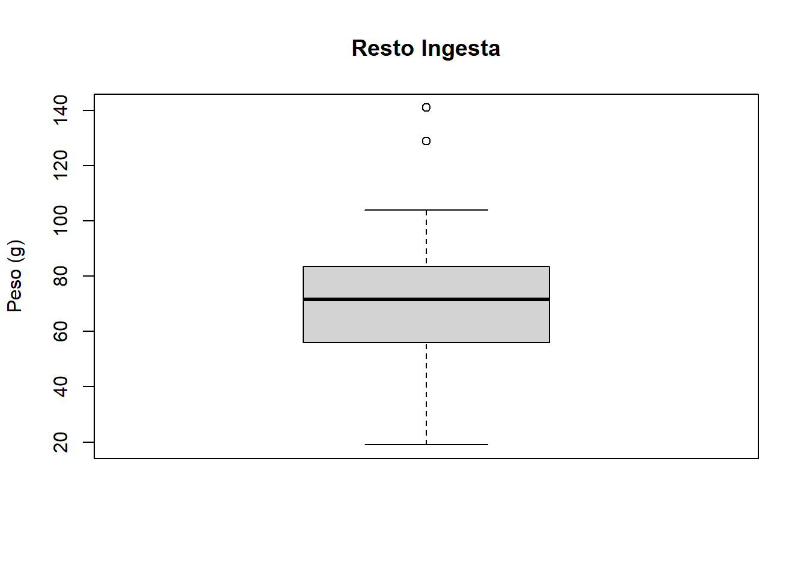
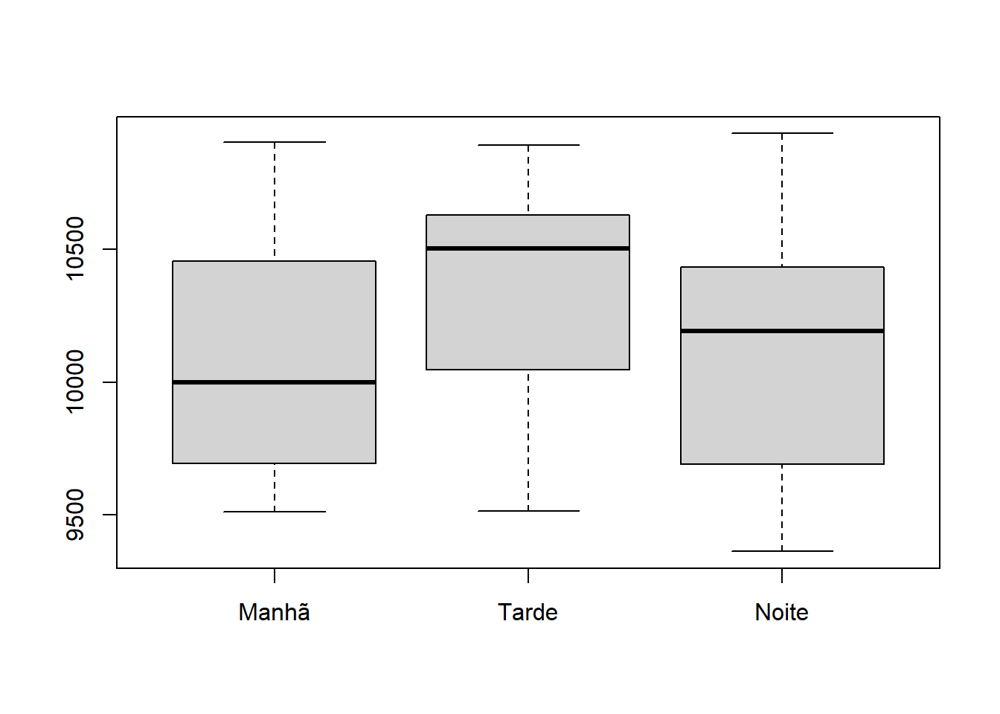
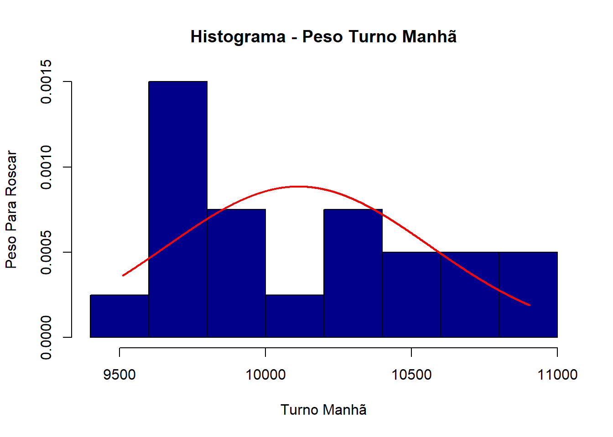
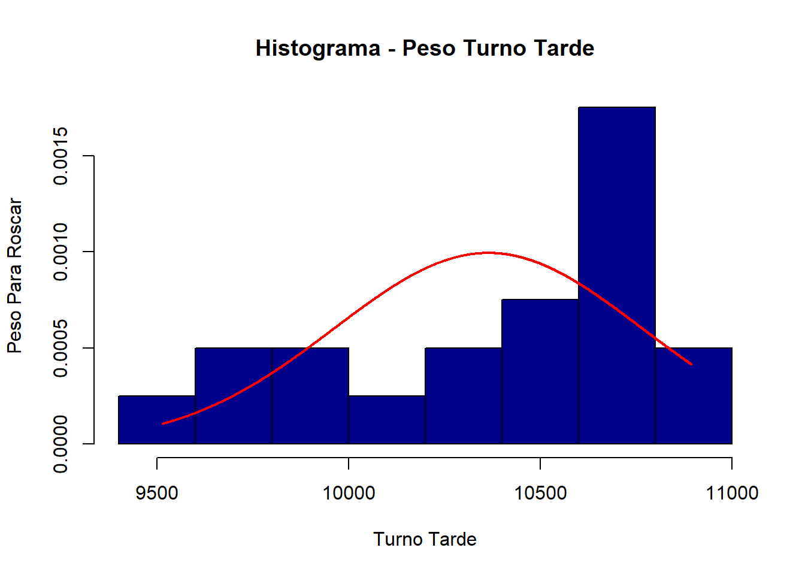
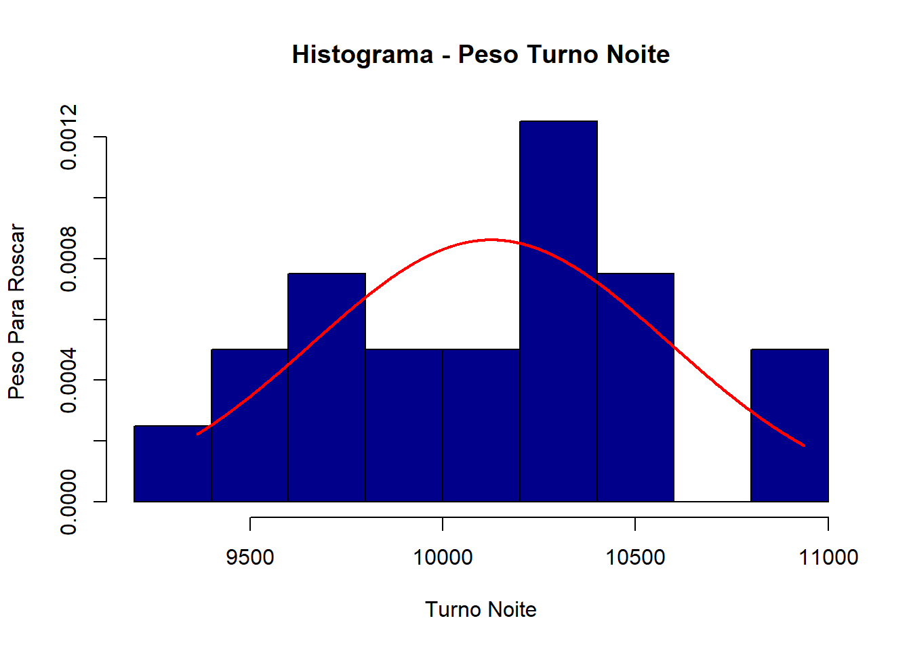

## Dados coletados:
sodio<- c(40, 75, 90, 93, 110, 110, 115, 116, 130, 148, 160, 160, 190, 220, 220, 250)Estatística Básica em R
Atenção: EM DESENVOLVIMENTO
As Bases Conceituais da Estatística
Neste capítulo vamos abordar a obtenção de estimativas de variância (e, portanto, do desvio-padrão) para os dados amostrais coletados. Usaremos as técnicas estatísticas para realizar esta análise, entretanto, com o auxílio computacional. Isso não exime o estudante de procurar entender a forma de cálculo, mas essa tarefa foi realizada pelos professores dos cursos de Estatística na academia. Partiremos do princípio com o qual o estudante já possui certa familiaridade com essa área do conhecimento, e que, com um foco prático neste curso, possam ser habilitados ao rápido exercício da técnica. Poderíamos aqui entrar nas explicações das fórmulas estatísticas, suas origens, principais estatísticos atuantes na área, mas nada disso permitirá no momento uma visualização prática das análises que aqui queremos focar.
Entretanto, apenas como uma breve descrição, vamos relembrar apenas alguns conceitos, suas fórmulas e componentes principais. O primeiro conceito importante, é aquele relacionado à natural variação dos dados amostrais dos indicadores de processo. Sabemos que ao coletar dados de uma linha produtiva, por exemplo, haverá diferentes valores levantados, pois há variações naturais gerados pelas inumeráveis causas atuantes no processo, que influenciam no valor do indicador em estudo. Podemos então entender e revisar o conceito de variação:
Variação:
É uma estatística que representa o quanto os dados estão dispersos entorno da média dos dados amostrados.
Aqui faremos a abordagem para os dados obtidos após realização do procedimento de amostragem, que é a coleta, de forma aleatória, de itens da produção, ou das informações disponíveis, para estudos estatísticos. De posse das variáveis quantitativas e seus valores típicos amostrados, necessitamos avaliar a sua distribuição ao longo de uma escala métrica, analisar sua variabilidade, forma etc. Vamos agora rever alguns conceitos importantes para nosso estudo.
Distribuição de variável quantitativa:
Se refere à natureza ou forma no qual os dados estão dispersos em uma faixa de valores possíveis.
Centro dos dados:
Se refere a um valor que seja representativo, ou médio, da localização do centro do conjunto de dados obtidos.
Outliers (valores discrepantes):
Se refere a um ou mais valores que se distanciam da grande maioria dos dados amostrados.
Percentil:
O percentil de ordem k (Pk), sendo k assumindo valores entre 0 e 100, é o valor da variável tal que k% dos valores são menores ou iguais a ele, ou seja, (100-k)% das observações são maiores ou iguais a ele, como mostra a ?@fig-percentilk:
Percentil Pk
Assim, quando assumimos que o percentil de 90% de pessoas que vivem com renda menor ou igual a 3,5 mil reais no Brasil, escrevemos P~90= 3,5mil reais. Os percentis P25, P50, e P75 são os quartis Q1, Q2 e Q3, respectivamente, bem como o percentil P50 é a mediana. Já os percentis múltiplos de 10 são considerados decis (P10, P20, etc).
Para se determinar os valores dos percentis, usamos a seguinte regra detalhada na ?@fig-regraspercentis:
Regras para determinação dos Percentis Pk
Dado os valores de sódio (mg/100g) em 16 lotes diferentes de soluções salinas , determine os percentis de 10%, 50% e 90% para as amostras coletadas:
Comando para determinar os valores de sódio para P10, P50 e P90 :
quantile(sodio, probs=c(0.10, 0.50, 0.90)) 10% 50% 90%
82.5 123.0 220.0 Estatísticas descritivas dos dados
Em uma breve lembrança ao leitor sobre a importância das medidas de posição, os valores de moda, mediana e média devem ser considerados principalmente quando temos assimetria nos dados amostrais. Em algumas situações a mediana será um valor mais interessante do que a média, bem como talvez a própria moda.
hist(sodio)
Síntese Numérica Estatística
Para ilustrar um pouco mais o acima exposto, considere uma turma que realizou testes na escrita de textos em sala de aula, com 29 alunos, e que tenham seus desempenhos relativizados com base no número de erros cometidos. A ?@fig-mediamodamediana mostra o resultado, onde podemos notar que a distribuição dos dados altera a importância relativa de se utilizar valores médios para representar a turma como um todo (note que há muitos alunos com desempenhos diferentes da média nas turmas A e C):

Visualização da Moda, Média e da Mediana
Assim, identificar a tendência central de uma variável quantitativa pode não ser suficiente para descrever a sua distribuição, pois dois ou mais grupos podem apresentar a mesma tendência central e serem essencialmente distintos entre si. Para ser possível diferenciar os grupos, é necessário efetuar análises de variabilidade dos dados conjuntamente. A ?@fig-compmediadesvpad a seguir demonstra o fato com mais propriedade:
Para se obter uma estatística descritiva básica, utiliza-se o comando “summary”, fornecendo valores de média, valores mínimo e máximo, mediana, 1ºe 3º quartis:
summary(sodio) Min. 1st Qu. Median Mean 3rd Qu. Max.
40.0 105.8 123.0 139.2 167.5 250.0 Como alternativa, pode-se usar o comando “describe”, do pacote “psych”:
library(psych)Warning: pacote 'psych' foi compilado no R versão 4.5.2describe(sodio) vars n mean sd median trimmed mad min max range skew kurtosis se
X1 1 16 139.19 57.9 123 138.36 51.89 40 250 210 0.33 -0.95 14.48Comparação de Médias e desvios-padrões de 3 distribuições
Note que uma mesma curva-padrão normal com mesma variância igual a 1, possui médias distintas, e que, com variâncias diferentes podem apresentar a mesma média (igual a 5). Neste último caso, o processo com maior variabilidade (variância igual a 4 ou desvio-padrão igual a 2) possui pior desempenho na escala sigma que o anterior (variância unitária).
A Qualidade de um processo é tomada como sendo o inverso de sua variabilidade (Qualidade = 1/ desvio-padrão). Quanto maior a variabilidade do processo, pior será o seu controle e resultado final. Em geral, desejamos realizar dois controles básicos nos processos:
Controle de média da variável quantitativa dentro dos limites de especificação do processo, em especial no seu valor nominal (ou Target), que pode ser o valor médio da faixa de especificação, por exemplo.
Controle de variabilidade da variável quantitativa, através da ação nas causas comuns de variação do processo, ou eventualmente, bloqueando as causas especiais de variação, quando identificadas.
Quando controlamos a média e a variabilidade do processo, dizemos que ele está sobre “Controle Estatístico” e “Capacidade” adequada para atender as especificações dos clientes (internos ou externos). O Controle Estatístico de Processos visa atuar na sua estabilidade e também em sua capacidade projetadas. o ideal é que a Qualidade do processo seja tal que haja ambos os requisitos satisfeitos e mantidos ao longo do tempo, como mostra o item (a) da ?@fig-controlestcap a seguir:
Para elucidar ainda mais um pouco a importância da variabilidade, vamos considerar o exemplo a seguir.
Considere duas balanças A e B, onde uma esfera de 1.000 gramas é pesada repetidamente nelas. O resultado das várias medidas podem ser vistos na ?@fig-histbal a seguir:
Note
Note que as duas balanças possuem a mesma tend~encia central (1.000g), como também são simétricas, entretanto, com maior variação de medições na balança B.
Quantificando a variabilidade entre as medições: podemos determinar a amplitude de variação em cada balança, ou seja, a diferença entre o maior e o menor valor das medidas (a tabela foi omitida por praticidade apenas). Assim, considere os valores:
Balança A: 1.040g - 945g = 95g.
Balança B: 1.095g - 895g = 200g.
Apesar de que a amplitude fornece uma noção da variabilidade total dos dados, ela não informa absolutamente nada de como estão distribuidos os pontos dentro do intervalo delimitado pelo maior e o menor valor dos dados amostrais de cada balança, como mostra a ?@fig-amplitudebalança.
Comparação de pesagem em duas balanças distintas A e B
Uma melhor medida neste caso é o desvio-padrão.
O Desvio-padrão
Porque a Amplitude Total considera apenas os extremos da variável. Precisamos de uma medida de dispersão que leve em consideração todos os valores da variável. essa medida é o desvio-padrão.
Calculando o desvio-padrão para medidas de perda de peso de um grupo em regime alimentar:
Mas o quanto o desvio-padrão representa em relação à media? Isso nos daria uma informação quanto à “magnitude” do desvio-padrão (DP). Para isso podemos calcular o Coeficiente de variação (CV), que pode ser definido como:
\[CV = {{desvio-padrão}\over{Média\ de\ perda\ de\ peso}}\] \[CV = {{2,1}\over{4,3}}\ {\ =0,525,\ ou\ seja,\ 52,5\%. }\] O DP do exemplo representa algo em torno de 52,5% do valor da média, portanto indica alta variabilidade dos dados da variável analisada. A maior vantagem do uso do CV é o fato de que ele permite a comparação entre unidades de medidas diferentes para se dar uma noção da dispersão dos dados analisados.
Considere agora os dados de 16 marcas de chocolates analisadas da ?@fig-chocolates a seguir:
Informações nutricionais de barras de chocolate
As 16 marcas de barras de chocolate são:
- mais homogêneas no quesito energia (menor variação do CV);
- mais heterogêneas nos quesitos sódio e proteína (maior variação no CV).
Note que os nutrientes gordura e proteína são medidos na mesma unidade(%), mas os DP´s não são diretamente comparáveis pois as escalas são diferentes entre si.
Vamos agora abordar a análise quantitativa dos valores médios e de variação dos processos em relação à sua especificação.
O Diagrama de Pareto
O Diagrama ou Gráfico de Pareto é uma representação gráfica dos dados obtidos sobre determinado problema que ajuda a identificar quais aspectos prioritários devem ser trabalhados
A adaptação do Princípio de Pareto, inicialmente desenvolvida pelo sociólogo Wilfredo Pareto na Itália, foi feita por Joseph Moses Juran em 1950, adaptando-a à Teoria da Distribuição Desigual das Perdas de Qualidade. Sua concepção é de que uma pequena percentagem das causas (20%) produz a maioria dos defeitos (80%). Portanto as pequenas causas seriam as causas “vitais” dos processos, e que geram as causas “triviais”, por consequência.
Para montar um diagrama ou gráfico de Pareto, devemos:
Identificar qual é o problema a ser estudado.
Pesquisar e elencar os principais possíveis fatores causadores do problema a ser estudado.
Quantificar as grandezas envolvidas (dados quantitativos do problema).
Ordená-los por importância decrescente de relevância de forma acumulada, agrupadas por grupos de afinidades ou causas.
Determinar a magnitude total do problema.
Identificar os percentuais relativos de cada classe ou grupo.
Plotar um gráfico de barras de duplo eixo, sendo:
– O primeiro eixo o valor da classe individual (altura da coluna).
– O segundo eixo o valor percentual acumulado das classes (gráfico de linha).
Pareto para as possíveis causas de furo de pneus de caminhão.
Causas para Pneu Furado
A análise de barras indica que a(s) principal(is) causa(s) associada(s) aos furos. Uma análise rápida permite identificar que a principal causa é a ocorrência de Buracos na Estrada, seguida de presença de objetos cortantes nela. Juntas, perfazem mais de 80% dos problemas de furos de pneus…
É muito comum em projetos Seis Sigma utilizar os Gráficos de Pareto para realizar a chamada análise de fenômeno do problema. Esta, consiste em desmembrar em causas menores as causas primárias citadas no Gráfico de Pareto. Obviamente, a causa primária “Buraco na estrada” pode ser dividida em classes menores, como “Buracos rasos com material cortante”, ou “Degradação por Água Pluvial”, etc… com isso, até onde se consiga aprofundar a análise, deve-se fazê-la, obviamente, resguardada as devidas relevâncias ao problema.
Como os projetos são fortemente amparados por análises econômicas, é importante realizar o desdobramento do problema segundo uma ótica de custos, desdobrando financeiramente os impactos, igualmente. Uma análise quantitativa para as causas, deve se amparada pela relevância econômica para as ações. Podem ocorrer desdobramentos muito significantes em termos de causas primárias dos problemas, mas que não acompanham necessariamente o custo maior das operações. nem sempre a primeira causa de perdas é mais significativa em termos econômicos, os impactos devem ser identificados separadamente.
Stem-and-Leaf
Estes diagramas de visualização de dados são conhecidos como Diagramas Ramo e Folha, sendo os dados organizados em grupos (os ramos ou STEM) e em valores de cada grupo (as folhas ou LEAF). Com esta organização, permite-se a análise de em quais grupos os dados estão mais concentrados, nos dando uma nossa de “Densidade de Distribuição”.
Vejamos na forma de um exemplo, como elaborá-lo e interpretá-lo:
Pareto para as possíveis causas de furo de pneus de caminhão.
Considere os seguintes dados coletados, a respeito de um indicador que registra as perdas de alimento nos pratos de clientes de um restaurante (Resto Ingesta), onde tem como saída a amostragem de vários pratos (peso em gramas) com sobras em um dia de coleta.
Dados: 94; 141; 51; 84; 19; 71; 60; 72; 104; 62; 28; 82; 45; 129; 77; 50; 90; 65; 49; 71; 83; 69; 73; 52; 64; 76; 87.
Para elaborar o diagrama Stem and Leaf procedemos da seguinte forma:
Em uma primeira coluna colocamos o valor dos decimais das amostras (ou centenas), partindo do menor para o maior valor decimal. No nosso exemplo, a amostra de menor valor em peso é 19 e a maior é 141 gramas. Assim, vamos ordenar em uma coluna valores de 10 a 140.
Nas demais colunas à direita da primeira, vamos preenchendo com os números das unidades, em ordem de ocorrência, até esgotarem os números da amostra. Por exemplo, o primeiro número da amostragem, 19, estará na linha da dezena 10 e à direita escreve-se o número da unidade 9. Para o Número 60, escreve-se zero ao lado direito do número 60, e assim sucessivamente.
Assim, obtemos o diagrama:
resto<- c(94, 141, 51, 84, 19, 71, 60, 72, 104, 62, 28, 82, 82, 45, 129, 77, 50, 90, 65, 49, 71, 83, 69, 73, 52, 64, 76, 87)
stem(resto)
The decimal point is 1 digit(s) to the right of the |
0 | 9
2 | 8
4 | 59012
6 | 02459112367
8 | 2234704
10 | 4
12 | 9
14 | 1Caso queira ampliar o tamanho da árvore (Stem) basta introduzir o comando “scale”, dobrando o tamanho, assim:
resto<- c(94, 141, 51, 84, 19, 71, 60, 72, 104, 62, 28, 82, 82, 45, 129, 77, 50, 90, 65, 49, 71, 83, 69, 73, 52, 64, 76, 87)
stem(resto, scale=2)
The decimal point is 1 digit(s) to the right of the |
1 | 9
2 | 8
3 |
4 | 59
5 | 012
6 | 02459
7 | 112367
8 | 22347
9 | 04
10 | 4
11 |
12 | 9
13 |
14 | 1Note que agora a escala do Stem apareceu do 1 ao 14. O Valor 9 que aparece à direita se refere ao número 19 do vetor “resto”, que não aparecia antes na primeira opção (scale=1, por default).
Alternativamente, poderíamos escrever o ramo em ordem crescente de 1 a 14 apenas, que o efeito final seria o mesmo visualmente… a informação importante que o diagrama traz é que os dados dos pesos médios de Resto Ingesta estão em torno de 70 gramas aproximadamente. Conferindo:
mean(resto)[1] 72.5Para o empresário neste momento não necessitaria um valor mais confiável, mas já pode estimar o comportamento do indicador de sobras nos pratos após refeições e o quanto de peso ele está em média descartando diariamente, bastando multiplicar o valor médio estimado pelo número de pratos servidos naquele dia. Da mesma forma poderia estimar o peso médio de pratos pesados pelos clientes no dia de trabalho. Para estimativas mais precisas aconselha-se a utilização de análises de médias, medianas e variância dos dados amostrais, através das metodologias estatísticas.
Histogramas
Ao analisarmos o diagrama Stem and Leaf, vemos que há uma relação de frequências de ocorrência de alguns valores em torno de valores médios, visualmente observáveis no diagrama anterior (figura 27). Uma nova forma de relacionar estas frequências foi desenvolvida pelos estatísticos em forma de um gráfico de barras, onde no eixo Y relacionam-se as frequências relativas para algumas classes observáveis, sendo estas últimas expressas no eixo X. Assim, para cada variação entre essas classes apontam-se os valores nelas contidos de forma cumulativa, levando a obter-se maiores barras no gráfico para as classes mais presentes nas amostras levantadas, tendo assim, por consequência, que estas representariam as classes mais frequentes na amostra estudada. Vamos ver esse exemplo.
Neste exemplo, foram coletados em um restaurante os pesos (em gramas) dos pratos que continham sobras de comida após a refeição, o chamado Resto Ingesta. A amostragem se deu aleatoriamente ao longo do serviço em um mês de atendimento, tendo gerado os dados do vetor “resto” anterior (pesos em gramas). Para gerar o histogrma no R basta executar o seguinte comando:
hist(resto)
Ou ainda:
hist(resto, col = "darkblue", border = "black")
Caso deseje que o eixo Y seja a densidade de probabilidades, e alterar o nome dos eixos, basta fazer:
hist(resto, col = "darkblue", border = "black", prob=TRUE, xlab="Resto Ingesta (g)", ylab="Densidade Prob", main= "Histograma - Resto Ingesta")
Para finalizar, adicionar a linha normal (gaussiana), adicionam-se os comandos:
histograma<- hist(resto, col = "darkblue", border = "black",
prob=TRUE, xlab="Resto Ingesta (g)", ylab="Densidade Prob",
main= "Histograma - Resto Ingesta")
xfit<-seq(min(resto),max(resto))
yfit<-dnorm(xfit,mean=mean(resto),sd=sd(resto))
lines(xfit, yfit, col="red", lwd=2)
Ao longo das próximas aulas iremos explorar mais os Histogramas.
Boxplots
O Boxplot é uma gráfico extremamente útil para visualizar a distribuição dos dados, a presença de causas especiais (valores discrepantes) e também a posição relativa da mediana frente aos dados amostrados. Permite a comparação de vários grupos amostrais, o que será muito útil na análise de processos através dos testes de hipóteses e também nos experimento fatoriais que à frente serão abordados. Um boxplot possui os componentes mostrados na ?@fig-boxplotmontagem a seguir:
Podemos avaliar primariamente o tipo de histograma que os dados apresentarão, analisando inicialmente os Boxplots gerados de forma antecipada. Há algumas formas típicas que estão correlacionadas à forma da curva dos dados nos histogramas, sendo as principais retratadas na ?@fig-tiposdist :
Utilizaremos esse conceito para avaliar a normalidade dos dados e também a qualidade dos dados amostrais nos capítulos futuros.
Para o caso do exemplo do resto Ingesta, teríamos o seguinte Boxplot:
boxplot(resto, main="Resto Ingesta", ylab="Peso (g)")
A análise do Boxplot indica a presença de causas especiais atuando (pontos extremos ou outliers), que deve ser analisado pontualmente cada caso, pois interferem na obtenção da média e desvio-padrão representativa do processo de medição. Para obter a média e desvio-padrão, temos a opção:
mean(resto) [1] 72.5sd(resto)[1] 26.00783Outra opção é gerar a Estatística descritiva dos dados. Usa-se o comando:
summary(resto) Min. 1st Qu. Median Mean 3rd Qu. Max.
19.00 58.00 71.50 72.50 83.25 141.00 Para se obter os quartis:
quantile(resto, probs=c(0.25, 0.5, 0.75)) 25% 50% 75%
58.00 71.50 83.25 Obtendo a distância interquartílica:
q3<-quantile(resto, probs=c(0.75))
q1<-quantile(resto, probs=c(0.25))
IQ<-q3-q1
IQ 75%
25.25 Um exercício comlementr de análise pod ser a obtenção do coeficiente de varição dos dados (CV), sendo calculado por:
cv<- sd(resto)/mean(resto)
cv[1] 0.3587287Vamos fazer uma análise geral, aplicando os conhecimentos até aqui, no ?@exr-estoqueturno a seguir:
Considere o nível de estoque aguardando a etapa de Rosqueamento em uma Fundição de peças (entrada do processo), para os dados diários referentes ao término de cada um dos três turnos de trabalho, da tabela a seguir (peso medido em kg):
Distribuição de estoque para roscagem ao término de caa turno
A análise dos dados através de uma estatística descritiva, após carregar os dados da tabela corretamente, fornece:
library(readxl)
estoquerosca<-read_xlsx("C:/Users/ericb/OneDrive/Documentos/ADE/pesos_roscagem.xlsx")
summary(estoquerosca) Manhã Tarde Noite
Min. : 9511 Min. : 9515 Min. : 9363
1st Qu.: 9705 1st Qu.:10101 1st Qu.: 9713
Median :10000 Median :10505 Median :10194
Mean :10113 Mean :10364 Mean :10125
3rd Qu.:10436 3rd Qu.:10628 3rd Qu.:10417
Max. :10905 Max. :10894 Max. :10937 Analisando a distribuição dos dados por boxplot, temos:
boxplot(estoquerosca)
Há uma leve tendência de maior estoque médio no turno da tarde, evidenciado pela mediana, e não foram detectadas causas especiais.
Analisando o histograma dos turnos, temos:
Turno da Manhã:
histograma<- hist(estoquerosca$Manhã, col = "darkblue", border = "black", prob=TRUE,
xlab="Turno Manhã", ylab="Peso Para Roscar", main= "Histograma - Peso Turno Manhã")
xfit<-seq(min(estoquerosca$Manhã),max(estoquerosca$Manhã))
yfit<-dnorm(xfit,mean=mean(estoquerosca$Manhã),sd=sd(estoquerosca$Manhã))
lines(xfit, yfit, col="red", lwd=2)
Turno da tarde:
histograma<- hist(estoquerosca$Tarde, col = "darkblue", border = "black", prob=TRUE,
xlab="Turno Tarde", ylab="Peso Para Roscar", main= "Histograma - Peso Turno Tarde")
xfit<-seq(min(estoquerosca$Tarde),max(estoquerosca$Tarde))
yfit<-dnorm(xfit,mean=mean(estoquerosca$Tarde),sd=sd(estoquerosca$Tarde))
lines(xfit, yfit, col="red", lwd=2)
Turno da Noite:
histograma<- hist(estoquerosca$Noite, col = "darkblue", border = "black", prob=TRUE,
xlab="Turno Noite", ylab="Peso Para Roscar", main= "Histograma - Peso Turno Noite")
xfit<-seq(min(estoquerosca$Noite),max(estoquerosca$Noite))
yfit<-dnorm(xfit,mean=mean(estoquerosca$Noite),sd=sd(estoquerosca$Noite))
lines(xfit, yfit, col="red", lwd=2)
A análise dos histogrmas indicam grande dispersão dos dados, talvez até mesmo uma mistura de populações (aspecto bimodal), e demanda maior investigação.
Importante verificar a normalidade dos dados:
shapiro.test(estoquerosca$Manhã)
Shapiro-Wilk normality test
data: estoquerosca$Manhã
W = 0.92037, p-value = 0.1007shapiro.test(estoquerosca$Tarde)
Shapiro-Wilk normality test
data: estoquerosca$Tarde
W = 0.89837, p-value = 0.03844shapiro.test(estoquerosca$Noite)
Shapiro-Wilk normality test
data: estoquerosca$Noite
W = 0.95262, p-value = 0.4086Notar que o turno 2 apresenta p-valor menor que 0.05, o que sugere não-normalidade dos dados. Para continuar as análises, deve-se investigar a suposição de normalidade para o turno 2, através de nova amostragem com maiores níveis, ou ainda uma possível transformação das medidas (linearização).